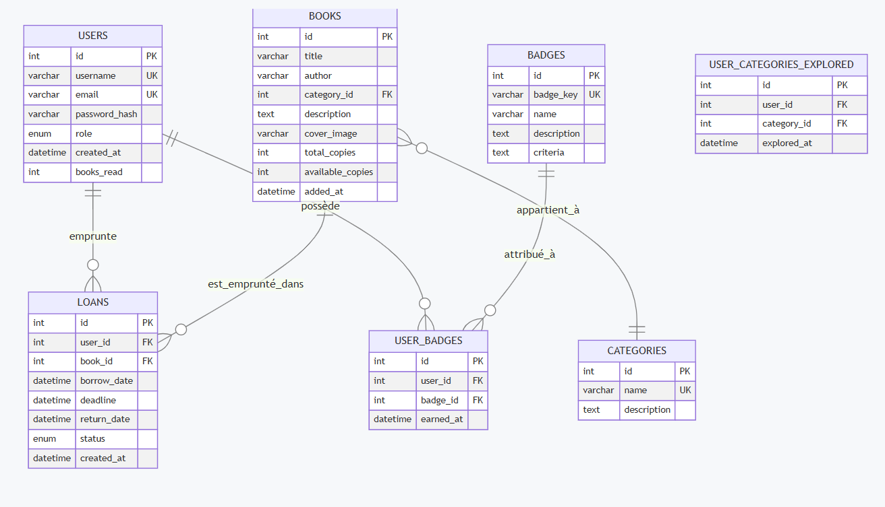
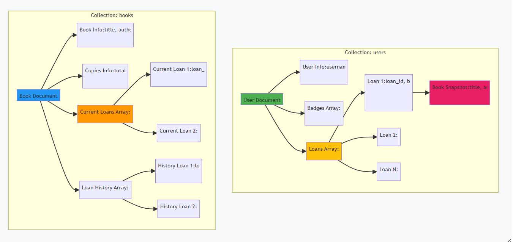

🗄️ Schémas de Base de Données
Comparaison SQL vs NoSQL
Approche SQL (Relationnelle)
Dans une approche SQL traditionnelle, les données sont normalisées (3NF) et réparties sur 7 tables avec relations entre elles :

Diagramme ERD montrant les 7 tables (USERS, BOOKS, CATEGORIES, LOANS, BADGES, USER_BADGES, USER_CATEGORIES_EXPLORED) avec leurs relations Foreign Keys
Problème 1 : Requête Complexe pour l'Historique
SELECT
u.username, u.email, u.books_read,
l.id as loan_id, l.borrow_date, l.deadline, l.status,
b.title, b.author, b.cover_image,
c.name as category
FROM users u
LEFT JOIN loans l ON u.id = l.user_id
LEFT JOIN books b ON l.book_id = b.id
LEFT JOIN categories c ON b.category_id = c.id
WHERE u.id = ?
ORDER BY l.borrow_date DESC;- ❌ 3 JOINs = opération coûteuse
- ❌ Si le livre est supprimé, l'historique perd les infos
- ❌ Performance dégradée avec beaucoup de données
Problème 2 : Transaction Complexe pour Emprunter un Livre
-- Étape 1: Vérifier disponibilité
SELECT available_copies FROM books WHERE id = ? FOR UPDATE;
-- Étape 2: Créer le prêt
INSERT INTO loans (...) VALUES (...);
-- Étape 3: Décrémenter le stock
UPDATE books SET available_copies = available_copies - 1;
-- Étape 4: Incrémenter books_read
UPDATE users SET books_read = books_read + 1;
-- Étape 5-6: Gérer catégories et badges...
COMMIT;- ❌ Minimum 6 requêtes dans une transaction
- ❌ Risque de deadlock
- ❌ Complexité du code élevée
Approche NoSQL (MongoDB)
MongoDB utilise une approche dénormalisée avec seulement 2 collections et des documents embarqués :

Diagramme montrant les 2 collections MongoDB (users et books) avec leurs documents embarqués (loans, badges, loan history)
{
"_id": ObjectId("507f1f77bcf86cd799439011"),
// Informations de base
"username": "Andro",
"email": "andro@library.com",
"password": "$2b$12$hashed_password",
"role": "user",
"created_at": ISODate("2024-01-10"),
// Statistiques
"books_read": 12,
"categories_explored": ["Classic", "Fantasy"],
// Badges embarqués
"badges": [
{ "badge_id": "welcome", "earned_at": ISODate(...) },
{ "badge_id": "bookworm", "earned_at": ISODate(...) }
],
// HISTORIQUE COMPLET EMBARQUÉ
"loans": [
{
"loan_id": ObjectId("..."),
"book_id": ObjectId("..."),
// SNAPSHOT du livre (données figées)
"book_snapshot": {
"title": "1984",
"author": "George Orwell",
"category": "Classic",
"cover_image": "https://..."
},
"borrow_date": ISODate("2024-01-15"),
"deadline": ISODate("2024-01-29"),
"return_date": ISODate("2024-01-20"),
"status": "Returned"
}
]
}{
"_id": ObjectId("507f191e810c19729de860ea"),
// Métadonnées du livre
"title": "1984",
"author": "George Orwell",
"category": "Classic", // Pas de FK!
"description": "Dystopian social science fiction",
"cover_image": "https://example.com/1984.jpg",
// Gestion du stock
"total_copies": 5,
"available_copies": 3,
"added_at": ISODate("2024-01-01"),
// EMPRUNTS ACTUELS EMBARQUÉS
"current_loans": [
{
"loan_id": ObjectId("..."),
"user_id": ObjectId("..."),
"user_name": "Andro",
"borrow_date": ISODate("2024-03-10"),
"deadline": ISODate("2024-03-24"),
"status": "Borrowed"
}
],
// HISTORIQUE DES EMPRUNTS PASSÉS
"loan_history": [
{
"loan_id": ObjectId("..."),
"user_id": ObjectId("..."),
"user_name": "Andro",
"borrow_date": ISODate("2024-01-15"),
"return_date": ISODate("2024-01-20"),
"status": "Returned"
}
]
}Solution 1 : Historique en 1 Seule Requête
// UNE SEULE requête - PAS DE JOIN!
db.users.findOne({ _id: ObjectId("user_id") })Solution 2 : Emprunter un Livre (2 Opérations Atomiques)
// Opération 1: Ajouter à l'utilisateur
db.users.updateOne(
{ _id: ObjectId("user_id") },
{
$push: { loans: {...} },
$inc: { books_read: 1 }
}
)
// Opération 2: Mettre à jour le livre
db.books.updateOne(
{ _id: ObjectId("book_id") },
{
$push: { current_loans: {...} },
$inc: { available_copies: -1 }
}
)Tableau Comparatif Final
| Aspect | SQL | NoSQL (MongoDB) | Gagnant |
|---|---|---|---|
| Nombre de tables/collections | 7 tables | 2 collections | ✅ NoSQL |
| Requête : Historique utilisateur | 3 JOINs | 1 requête simple | ✅ NoSQL |
| Requête : Emprunter un livre | 6 requêtes + transaction | 2 requêtes atomiques | ✅ NoSQL |
| Performance lecture | Moyenne (joins) | Excellente (embedded) | ✅ NoSQL |
| Intégrité référentielle | Foreign Keys strict | Application-level | ✅ SQL |
| Flexibilité schéma | Rigide | Flexible | ✅ NoSQL |
| Données historiques | Perdues si livre supprimé | Snapshots conservés | ✅ NoSQL |
| Scalabilité | Verticale | Horizontale (sharding) | ✅ NoSQL |